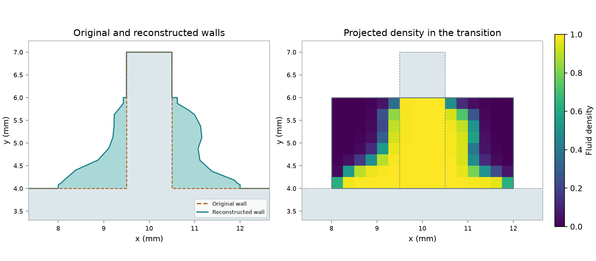

Design problem
Minimize port mechanical power while maintaining the original immersed side flow.
\[\min_{0\le m_i\le1} P(m)/P_{ref}\]Subject to the nonlinear FEM residual and flow constraint:
\[R(z,m)=0,\quad \eta(m)\ge\eta_{ref}\]Fixed pipe and collar; editable 4 × 2 mm transition; $q=0.1$, $\beta=0,2,8$.

Optimization loop
128 density variables
↓
Anchored Helmholtz filter → projection
↓
Brinkman resistance
↓
Nonlinear Taylor–Hood FEM
↓
Port objective and flow constraint
↓
Two discrete adjoints
↓
MMA update ↻
Adjoint: $R_z^T\lambda_F=\nabla_zF$; $\nabla_mF=F_m-R_m^T\lambda_F$.
Measured 60.48× serial sensitivity speedup; final projected KKT residual 1.369 × 10⁻⁸.